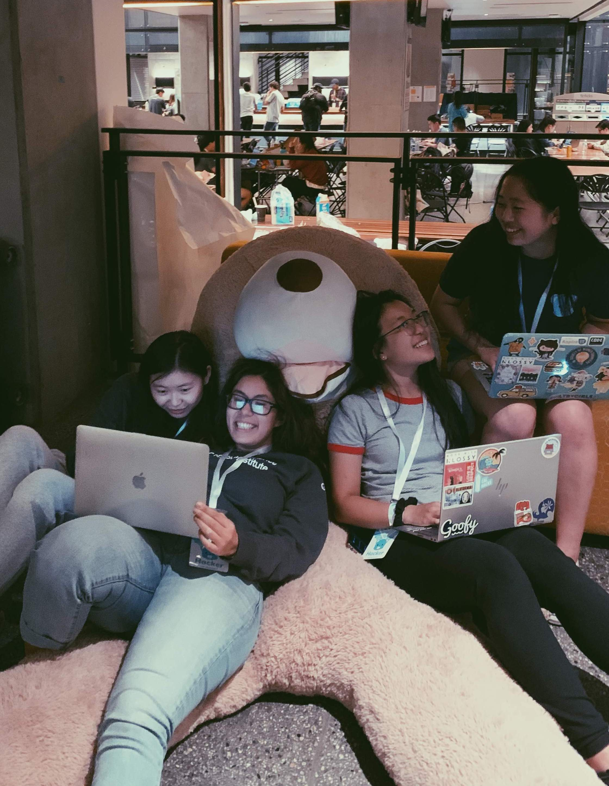
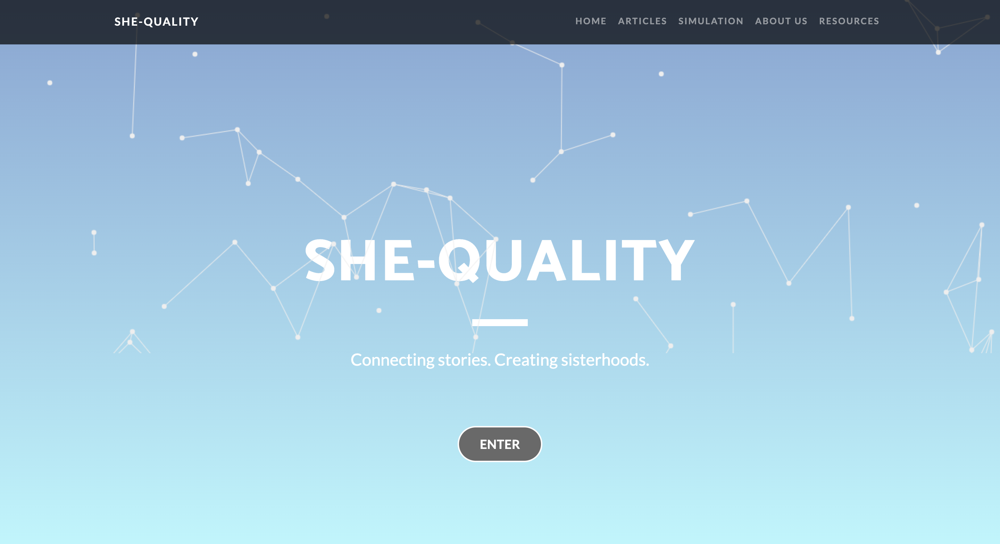
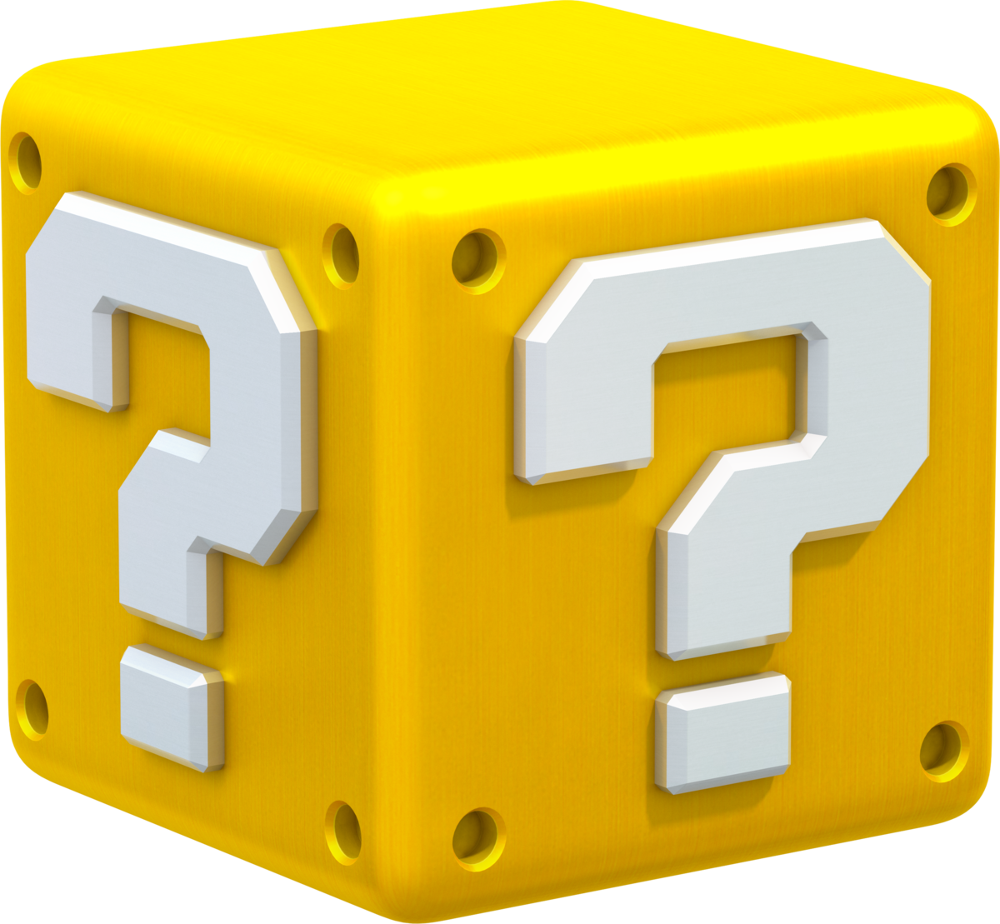

now
past
Now that you know who I am, here's how I got here:
🐻 I completed my undergrad at UC Berkeley.
🖼️ There, I fell in love with art through UCBUGG and the Art History department.
🫖 My favorite class was CS184, computer graphics, which I came back to as a teaching assistant.
🏠 My homes on campus were the
Society of Women Engineers,
Codeology, and
Association of Women in EE&CS
Forever thankful for the laughs and late nights with them.
In high school,
👧🏻 Kode With Klossy was my first introduction to CS and teaching CS.
🌸 Wanting to make my own local version, I started
She STEMs
in 2018, a STEM summer camp and workshop series to empower girls to feel confident and capable through STEM.
I'm fortunate to have had my studies supported by
Amazon,
ESA, PBWC, and others.
I am extremely grateful for their contributions, support, and mentorship towards my education and continue to look for ways to pay it forward.
projects 🛠

She-Quality
VR Web-App simulating the experience
Chabot: Explore the Galaxy!
Android app built with team to teach science.
Misc Projects!
Here's to the unfinished, broken, and prototyped projects.learnings
HA190F: Visual Activism
CS194-26: Computational Photograhy & Computer Vision
CS184: Computer Graphics
NWMedia 166: Critical Practices: People, Places, Participation